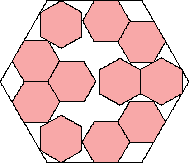
s = 5(3 + √3)/6 = 3.943+
Found by Maurizio Morandi
in April 2015.

s = 4
Trivial.
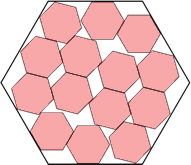
s = 37√3/15 = 4.272+
Found by Maurizio Morandi
in April 2015.
| 1. 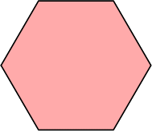 s = 1 Trivial. | 2. 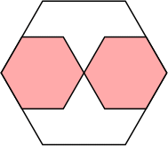 s = 2 Trivial. | 3. 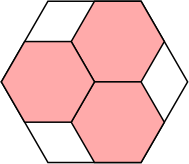 s = 2 Trivial. |
| 4. 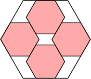 s = 7/3 = 2.333+ Trivial. | 5. 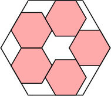 s = 8/3 = 2.666+ Found by Erich Friedman in March 2015. | 6-7. 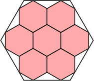 s = 5/√3 = 2.886+ Found by Maurizio Morandi in April 2015. |
| 8. 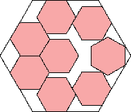 s = (51+5√3)/18 = 3.314+ Found by Maurizio Morandi in April 2015. | 9. 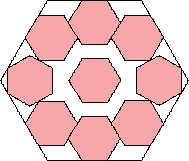 s = (24+5√3)/9 = 3.628+ Found by Maurizio Morandi in April 2015. | 10. 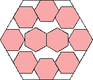 s = 2 + √3 = 3.732+ Found by Maurizio Morandi in April 2015. |
| 11. 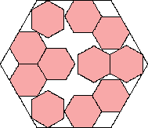 s = 5(3 + √3)/6 = 3.943+ Found by Maurizio Morandi in April 2015. | 12-13. s = 4 Trivial. | 14. 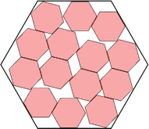 s = 37√3/15 = 4.272+ Found by Maurizio Morandi in April 2015. |
| 15. 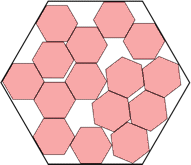 s = (73+35√3)/30 = 4.454+ Found by Maurizio Morandi in April 2015. | 16. 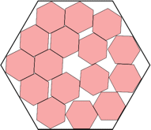 s = 55√3/21 = 4.536+ Found by Maurizio Morandi in April 2015. | 17-19. 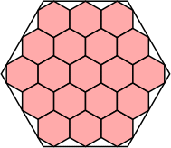 s = 8/√3 = 4.618+ Found by Maurizio Morandi in April 2015. |
| 20-21. 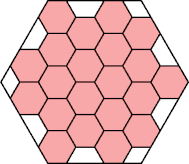 s = 5 Trivial. | 22. 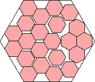 s = (39+8√3)/10 = 5.285+ Found by Maurizio Morandi in April 2015. | 23. 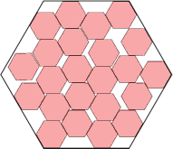 s = 38/7 = 5.428+ Found by Maurizio Morandi in April 2015. |
| 24. 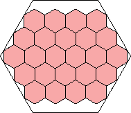 s = 19√3/6 = 5.484+ Found by Maurizio Morandi in April 2015. |